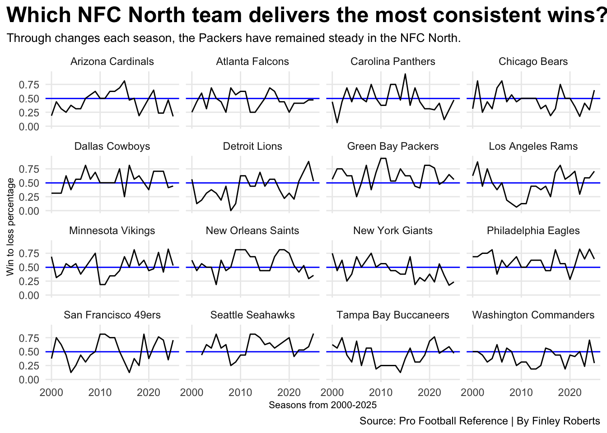
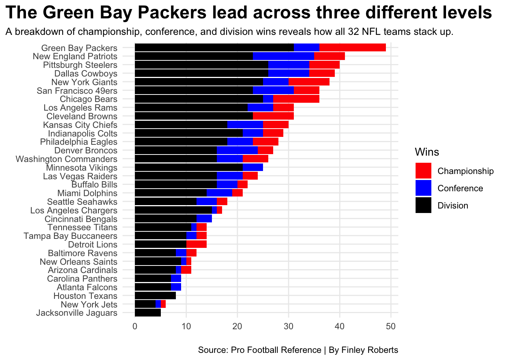

Are the Green Bay Packers the best team in the NFC North since 2000?
football
packers
nfcnorth
Author
Finley Roberts
Published
November 11, 2026
The Green Bay Packers have had a successful franchise, being one of the oldest teams in the National Football League. Many of their successful moments have come from some star quarterbacks, some of whom are now in the Hall of Fame. This includes Bart Starr and Brett Favre. The Packers are in the NFC North along with the Chicago Bears, Detroit Lions, and Minnesota Vikings.
Green Bay has an impressive history, but they aren’t the only NFC North team to want to establish dominance. The Bears, Lions, and Vikings are looking to do so as well. These teams have been playing each other for years and the rivals keep getting bigger.
Like every team, the Packers have had their ups and downs and have established themselves as one of the best NFL franchises.
But how have the Packers been in more recent years compared to the NFC North? Let’s take a look at that from the year 2000.
Code
library(tidyverse)library(nflreadr)library(gt)allteams <-read_csv("allteams.csv")allgames <-read_csv("allgames.csv")north_teams <-c("GB", "MIN","CHI", "DET")nfc_north_teams <- allteams |>filter(team %in% north_teams)gameswithnfcnorthwins <- allgames |>filter(home_team %in% north_teams | away_team %in% north_teams) |>mutate(game_result =case_when( home_score > away_score ~"home win", away_score > home_score ~"away win", home_score == away_score ~"tie" ) ) |>mutate(home_team_nfc_north =case_when( home_team %in% north_teams ~"Yes",TRUE~"No" ) ) |>mutate(away_team_nfc_north =case_when( away_team %in% north_teams ~"Yes",TRUE~"No" ) ) |>mutate(nfc_north_home_win =case_when( game_result =="home win"& home_team_nfc_north =="Yes"~1,TRUE~0 ) ) |>mutate(nfc_north_away_win =case_when( game_result =="away win"& away_team_nfc_north =="Yes"~1,TRUE~0 ) ) homewins <- gameswithnfcnorthwins |>filter(home_team_nfc_north =="Yes") |>group_by(home_team) |>summarize(wins =sum(nfc_north_home_win) ) |>rename(team = home_team)awaywins <- gameswithnfcnorthwins |>filter(away_team_nfc_north =="Yes") |>group_by(away_team) |>summarize(wins =sum(nfc_north_away_win) ) |>rename(team = away_team) team <- homewins |>bind_rows(awaywins) |>group_by(team) |>summarize(total_wins =sum(wins) ) team |>arrange(desc(total_wins)) |>mutate(team_display =case_when( team =="GB"~"Green Bay Packers", team =="MIN"~"Minnesota Vikings", team =="CHI"~"Chicago Bears", team =="DET"~"Detroit Lions",TRUE~ team )) |>select(team_display, total_wins) |>gt() |>cols_label(team_display ="NFC North Teams",total_wins ="Regular Season Wins" ) |>tab_header(title ="What NFC north team has the most wins since 2000?",subtitle ="Four teams, one division, and 25 seasons of wins to compare." ) |>tab_style(style =cell_text(color ="black", weight ="bold", align ="left"),locations =cells_title("title") ) |>tab_style(style =cell_text(color ="black", align ="left"),locations =cells_title("subtitle") ) |>tab_source_note(source_note =md("**By:** Finley Roberts | **Source:** nflreadr: The Sports Dataverse's R Package for The National Football League") ) |>tab_style(locations =cells_column_labels(columns =everything()),style =list(cell_borders(sides ="bottom", weight =px(3)),cell_text(weight ="bold", size=12) ) ) |>tab_style(style =list(cell_fill(color ="#203731"),cell_text(color ="white") ),locations =cells_body(rows = team_display =="Green Bay Packers") ) |>opt_row_striping() |>opt_table_lines("none")
What NFC north team has the most wins since 2000?
Four teams, one division, and 25 seasons of wins to compare.
NFC North Teams
Regular Season Wins
Green Bay Packers
275
Minnesota Vikings
228
Chicago Bears
201
Detroit Lions
169
By: Finley Roberts | Source: nflreadr: The Sports Dataverse’s R Package for The National Football League
The Packers sit at the top of the list for most wins since the year 2000, showing how successful they have been over the past 25 years. Although they lead in the NFC North, this doesn’t tell us how successful they have been compared to other teams.
While total wins show which teams have found the most success since the year 2000, it doesn’t tell the whole story because much more goes into football than just winning. Winning from season to season is an important part of keeping a successful franchise.
As I said before, a lot of teams experience highs and lows, but some teams manage to stay above that average.
So which NFL team has been the most consistent? Let’s take a look at which team had the best winning percentage from 2000-2025.
Code
standings2025 <-read_csv("Standings25.csv") |>mutate(season =2025)standings2024 <-read_csv("Standings24.csv") |>mutate(season =2024)standings2023 <-read_csv("Standings23.csv") |>mutate(season =2023)standings2022 <-read_csv("Standings22.csv") |>mutate(season =2022)standings2021 <-read_csv("Standings21.csv") |>mutate(season =2021)standings2020 <-read_csv("Standings20.csv") |>mutate(season =2020)standings2019 <-read_csv("Standings19.csv") |>mutate(season =2019)standings2018 <-read_csv("Standings18.csv") |>mutate(season =2018)standings2017 <-read_csv("Standings17.csv") |>mutate(season =2017)standings2016 <-read_csv("Standings16.csv") |>mutate(season =2016)standings2015 <-read_csv("Standings15.csv") |>mutate(season =2015)standings2014 <-read_csv("Standings14.csv") |>mutate(season =2014)standings2013 <-read_csv("Standings13.csv") |>mutate(season =2013)standings2012 <-read_csv("Standings12.csv") |>mutate(season =2012)standings2011 <-read_csv("Standings11.csv") |>mutate(season =2011)standings2010 <-read_csv("Standings10.csv") |>mutate(season =2010)standings2009 <-read_csv("Standings09.csv") |>mutate(season =2009)standings2008 <-read_csv("Standings08.csv") |>mutate(season =2008)standings2007 <-read_csv("Standings07.csv") |>mutate(season =2007)standings2006 <-read_csv("Standings06.csv") |>mutate(season =2006)standings2005 <-read_csv("Standings05.csv") |>mutate(season =2005)standings2004 <-read_csv("Standings04.csv") |>mutate(season =2004)standings2003 <-read_csv("Standings03.csv") |>mutate(season =2003)standings2002 <-read_csv("Standings02.csv") |>mutate(season =2002)standings2001 <-read_csv("Standings01.csv") |>mutate(season =2001)standings2000 <-read_csv("Standings2000.csv") |>mutate(season =2000)standings <-bind_rows(standings2025, standings2024, standings2023, standings2022, standings2021, standings2020, standings2019, standings2018, standings2017, standings2016, standings2015, standings2014, standings2013, standings2012, standings2011, standings2010, standings2009, standings2008, standings2007, standings2006, standings2005, standings2004, standings2003, standings2002, standings2001, standings2000 ) |>mutate(Tm =gsub("*", "", Tm, fixed =TRUE), Tm =gsub("+", "", Tm, fixed =TRUE),Tm =case_when( Tm =="Washington Redskins"~"Washington Commanders", Tm =="Washington Football Team"~"Washington Commanders", Tm =="St. Louis Rams"~"Los Angeles Rams",TRUE~ Tm ),TmSeason =paste(Tm, season) )ggplot() +geom_hline(yintercept=0.497157, color="blue") +geom_line(data=standings, aes(x=season, y=`W-L%`, group=Tm)) +facet_wrap(~Tm) +scale_x_continuous(breaks=c(2000, 2010, 2020)) +labs(x="Seasons from 2000-2025", y="Win to loss percentage", title="Which NFC North team delivers the most consistent wins?", subtitle="Through changes each season, the Packers have remained steady in the NFC North.", caption="Source: Pro Football Reference | By Finley Roberts" )+theme_minimal() +theme(plot.title =element_text(size =18, face ="bold"),axis.title =element_text(size =8), plot.subtitle =element_text(size=10), panel.grid.minor =element_blank(),,plot.title.position ="plot" )

Looking specifically at Green Bay, they have stayed consistent, as have the Minnesota Vikings, while the Bears and Lions have had some bigger highs and lows.
Winning games consistently is important, but how many of those wins turn into division wins, championships, or conference titles? A team’s success can also be built from those big games, not just the consistent wins. Looking beyond the regular season, the playoffs can share a lot of information. This gives us another way to compare the NFL’s historical franchises.
So what team turned those consistent wins into winning big?
Code
playoff <-read_csv("playoff.csv")everyone <- playoff |>filter(is.na(AV) ==FALSE ) |>select(Tm, Chmp, Conf, Div) |>pivot_longer(cols=-Tm,names_to ="Type",values_to ="Count" )ggplot() +geom_bar(data=everyone, aes(x=reorder(Tm, Count), weight=Count, fill=Type)) +coord_flip() +scale_fill_manual(name ="Wins", values =c("red", "blue", "black"), labels =c("Championship", "Conference", "Division") ) +labs(x=" ", y=" ", title="The Green Bay Packers lead across three different levels", subtitle="A breakdown of championship, conference, and division wins reveals how all 32 NFL teams stack up.", caption="Source: Pro Football Reference | By Finley Roberts" ) +theme_minimal() +theme(plot.title =element_text(size =18, face ="bold"), axis.title =element_text(size =8), plot.subtitle =element_text(size=10), panel.grid.minor =element_blank(),plot.title.position ="plot" )

When looking at total wins across the NFC North, the win-to-loss percentage, and winning championships, the Green Bay Packers have established themselves as one of those successful franchises. Green Bay has stayed consistent between 2000 and 2025, so those wins make a strong case that they are the division’s top team since at least 2000.